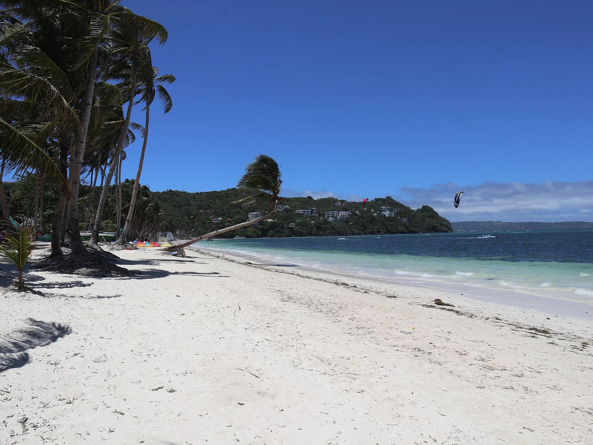

Bulabog Beach
Boracay, Philippines · kitesurf, windsurf

Côte est de Boracay, protégée par un récif, avec le vent d’amihan de novembre à avril. Eau plate et chaude.
- Lieu
- Boracay, Philippines
- Niveau
- Débutant
- Activités
- kitesurf, windsurf
- Type d'eau
- Mer / océan
- Coordonnées
- 11.97, 121.93 (position approximative du secteur)
Dangers à connaître
- Récif à marée basse.
- Rafales.
Le conseil d'Ocean Buddy
Navigue dans le lagon, jamais au-delà du récif.
Ouvrir dans Ocean Buddy Télécharger sur l'App Store
Source : Fiche Ocean Buddy · septembre 2026 · à vérifier localement.